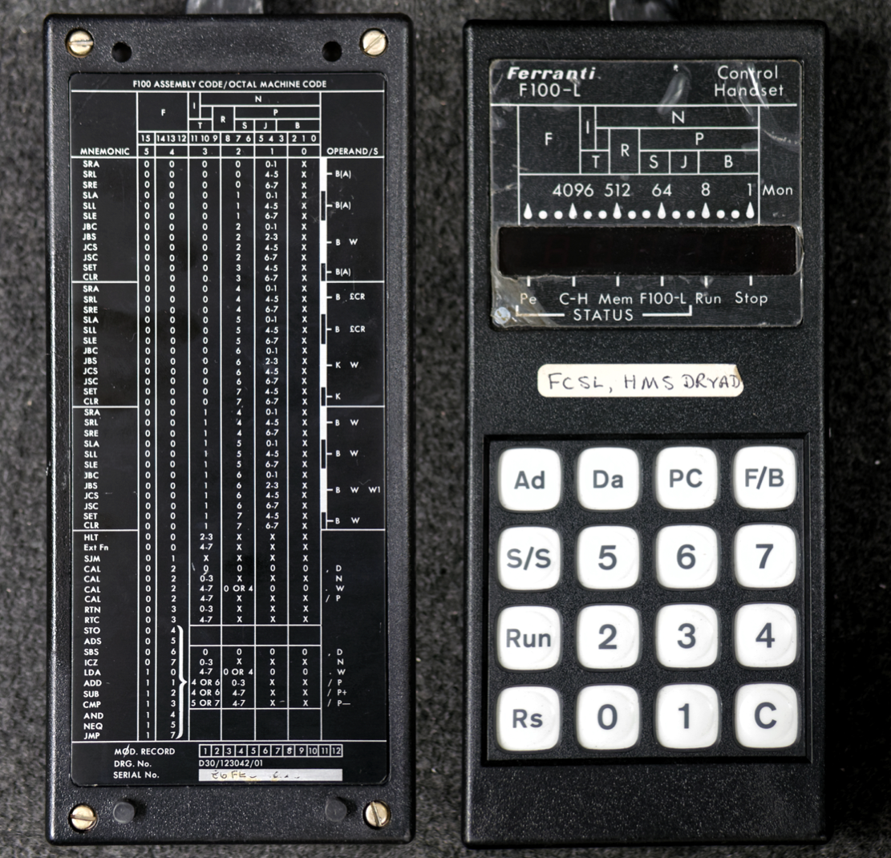
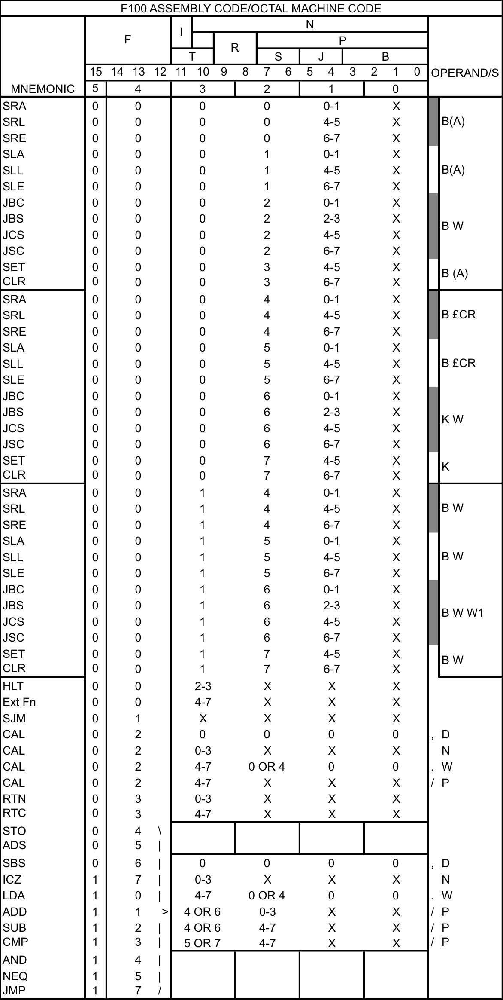
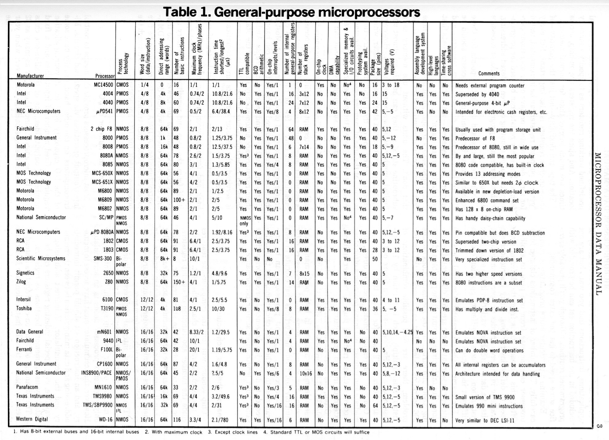
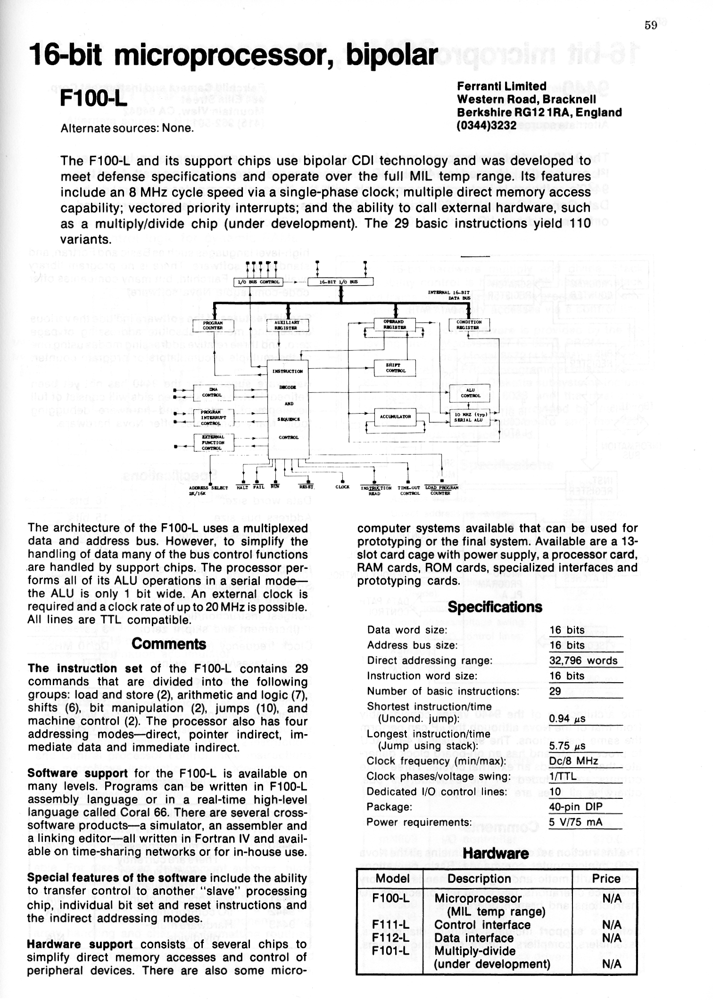

Appendices¶
Appendix1 - The F100-L Microcomputer Control Handset
Appendix2 - F100-L Handset Assembly Language Summary
Appendix3 - Comparison Table of Contemporary Microprocessors
Appendix4 - One Page Ferranti F100L Datasheet
Appendix5 - F100-L Family Silicon Photo Gallery
Appendix 1 - The F100-L Microcomputer Control Handset¶
A handset from the F100-L microcomputer, originally from an installation in HMS Dryad, is held in the collection at the Centre for Computing History, Cambridge, UK: Box704.
Appendix 2 - F100-L Handset Assembly Language Summary¶
The following table is a transcript from the back of the F100-L microcomputer controller handset
Appendix 3 - Comparison Table of Contemporary Microprocessors¶
The following table is reproduced from [15]
Appendix 4 - One Page Ferranti F100-L Datasheet¶
The following datasheet is reproduced from [15]
Appendix 5 - F100-L Family Silicon Photo Gallery¶
Ferranti F100-L CPU
Ferranti F100L AJ BSS2 FRD 8630¶
Die measures approximately 5.8mm x 5.8mm
F113 High Speed Memory interface chip.
GPS F113LAJ CS 9522A¶
Implemented on a ZNA2068 ULA, with an array of 15x15 logic elements.
Chip Die measures approximately 3mm x 3mm.
F115 Real Time Interrupt chip.
Ferranti F115L AJ BSS2 FRD 8636¶
Die size: approx 3.3mm x 3.3mm.
Detail of ULA 2000 series bipolar gate array elements on the F113